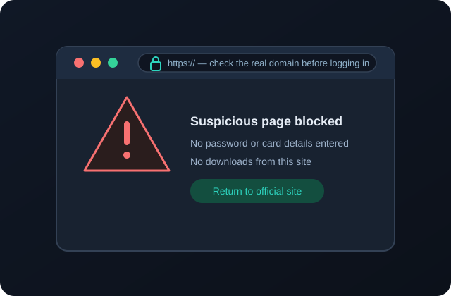
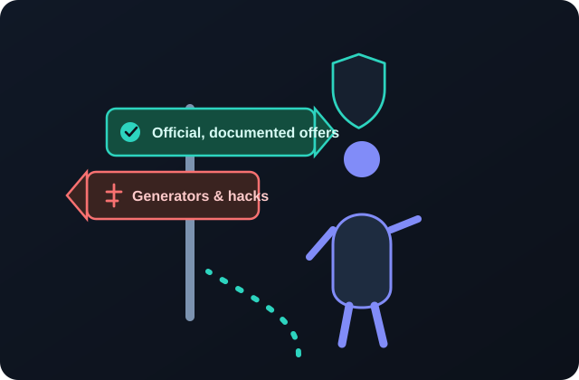

StripChat Token Scams, Fake Generators and Online Safety
Free-token scams work because they imitate the platform’s own look and language. This page dissects each variation — fake generators, phishing pages, malicious “mod” APKs, rogue extensions, survey loops, and credential requests — and gives you a concrete security routine, recovery steps if something slips through, and official places to report suspicious websites.
The embedded YouTube video below summarizes why free-token claims so often lead to scams, suspicious downloads, or account theft, and what to check before trusting an offer. It is an independent video hosted on YouTube; the detailed written guidance continues underneath.
- The chain from a “free token” ad to stolen credentials
- Why mod APKs and verification downloads are dangerous
- The simple checks that stop most token-related phishing attempts
Embedded third-party YouTube video. It does not autoplay; press play to load it. YouTube’s terms and privacy policy apply once you interact with the player. This site does not own or produce the video.
The short answer
There is no legitimate web page that generates StripChat free tokens for an arbitrary username, and no safe “mod” that unlocks balances. Every tool making that claim is one or more of the following: an advertising funnel, a phishing kit, a malware distributor, or a subscription trap. Protecting yourself is mostly a matter of recognizing the pattern, keeping credentials exclusively on the official domain, and keeping your device and recovery options in good shape.
⚠ Stop condition
If a page asks you to log in, enter a verification code, install an app or extension, download a file, or pay a release fee to receive free tokens, stop immediately — no legitimate promotion does any of these things.
How token-related scams work
Most campaigns follow the same funnel, and recognizing the stages makes each variation much less convincing:
- Bait. A video, comment, ad, or search result promises StripChat free tokens, a StripChat hack, or a “50 TK draw,” often using urgency or fake proof.
- Landing page. A branded page imitates an official tool, complete with a fake username checker and an animated “connecting to servers” sequence.
- Simulated success. The page shows tokens “added” to your account before you have logged in anywhere — theater designed to trigger commitment.
- The gate. To “release” the balance, you must pass “human verification”: surveys, sign-ups, an APK, an extension, or a “quick login.”
- The payoff for the scammer. Survey commissions, premium subscriptions, stolen credentials and 2FA codes, payment-card overlays, or malware installs.
- No tokens. The balance in your real account never changes because nothing ever connected to it.

Fake token generators
What they look like
Generator pages typically ask for a username and a token amount, display an animated progress bar, and then report success pending “verification.” Some show fabricated server logs or anti-bot messages to feel technical. None of these elements communicate with a platform billing system; they are scripted animations.
Why they cannot add anything
Balances are server-side ledger records tied to real payments, protected by authentication, authorization checks, fraud systems, and reconciliation. A stranger’s website has no credentials to your account and no access to those ledgers. Even real security vulnerabilities are responsibly reported and patched — they are not packaged into free public web tools, which would be shut down within hours and expose the operator to prosecution.
Their actual revenue model
Owners profit when you complete “verification” offers that pay affiliate commissions per lead, enter credentials on a cloned login form, or install bundled software. The promised tokens are the hook; the user is the product.
Phishing and lookalike login pages
Phishing is the most direct threat because it compromises the account itself. Lookalike pages copy the platform’s colors, logo, and login dialog, hosted on domains that resemble the real one at a glance — misspellings, hyphenated variants, new domain endings, or hostnames buried in a subdirectory.
Common delivery routes
- “Your free tokens are waiting” emails and direct messages with urgent links;
- Comments and bios containing shortened or disguised URLs;
- QR codes on images and videos that bypass careful reading of the domain;
- “Login to verify your giveaway entry” pages reached from fake support agents.
How to recognize them
- The address bar is wrong. The login page is not on the exact official domain. Inspect the full hostname, not just the page design.
- Something is off with security. Missing HTTPS, certificate warnings, or an
http://payment or login page. - The request is unexpected. Official security processes do not begin with strangers messaging you about prizes.
- Two-factor codes are requested. A login page fed by a phishing link may also try to capture the one-time code your authenticator generates.
Always navigate to the platform by typing its address or using your own bookmark, especially before logging in. Password managers help here: if your saved login does not offer to fill on a page, the domain probably does not match the one where you saved it.
Malicious APK files (“StripChat mod APK”)
Searches for StripChat mod APK or StripChat mods lead to downloadable Android packages advertised as “unlocked,” “free token,” or “premium” clients. We cover this strictly as a safety warning: installing such files is unsafe, and we provide no instructions for doing so.
Risks of sideloaded mod apps
- Credential overlays. A fake login screen appears on launch and sends your username and password to the operator.
- Payment harvesting. Overlay attacks can draw on top of real checkout screens to record card details.
- Toll fraud and subscriptions. Malware can send premium SMS messages or silently enroll the device in billed services.
- Adware and spyware. Persistent ads, notification spam, accessibility-service abuse, and contact or message theft.
- Account termination. Modified clients violate terms of service; detection can close the account and forfeit balances.
⚠ Why “my friend says it works” is unreliable
Mod apps frequently display a fake token balance inside the modified client itself — a locally faked number that never exists on the platform and cannot be spent. Screenshots of this fake balance are then used as “proof” in the next round of advertising.
Stick to the platform’s official website and, where an official app exists, the official app store listing from the verified publisher. If you have already enabled installs from unknown sources, disable that setting and follow the recovery steps below.
Fake browser extensions
“Token tool” extensions claim to detect offers, unlock credits, or auto-claim drawings. A browser extension can read and change your pages, so a malicious one can copy login forms, inject referral codes, rewrite links, steal cookies, or display fake account balances. Warning signs include:
- Requests for broad permissions (“read and change all your data on all websites”) for a tool that supposedly interacts with one site;
- Sideloaded extensions delivered as files instead of through a store listing;
- Brand-new listings with few users, generic reviews, and no verifiable developer identity;
- Install instructions that ask you to enable Developer Mode or disable security warnings.
Install extensions only after checking the developer, permissions, user base, and reviews, and remove anything you no longer recognize. Official token promotions do not require an extension.
Requests for passwords, codes, and payment details
Some scams skip the software entirely and simply ask. “Agents” or “promotion managers” approach users in chat, email, or fake social accounts, promising credits in exchange for “verification.”
- Passwords: no legitimate employee, moderator, or promotion needs your password. Ever.
- Two-factor and backup codes: one-time codes and backup codes belong only to you; sharing them lets an attacker complete a login even if the password is changed.
- Payment details: free prizes never require entering card data “for verification,” sending a small transfer, or buying a gift card.
- Remote access and screen sharing: “just open a support session so we can add the tokens” gives an attacker control of the device and accounts.
Treat unsolicited inbound contact about tokens as suspicious regardless of how official the profile looks. Verified platform staff operate through official channels and never move prize collection to external chat apps.
Fake surveys, forced downloads, and verification loops
“Human verification” on a token generator is rarely human verification at all. It is an affiliate gateway. Typical variants:
- Survey funnels that collect names, addresses, phone numbers, and “qualifying” marketing answers, then sell the data;
- Mobile subscription traps that ask for a phone number and silently bill premium-rate weekly services;
- Forced downloads of games, “cleaners,” VPN trials, or APKs that pay install commissions;
- Endless loops where one completed offer unlocks another, and the token “release” never arrives.
Real anti-bot checks (such as CAPTCHAs) do not ask for phone billing, personal data, or installs, and real promotions do not hide their entire claim process behind third-party offer walls.
Account-security best practices
- Use a unique, strong password. Dedicated to the platform and stored in a password manager, so a leak elsewhere cannot be replayed against this account.
- Turn on two-factor authentication. Prefer an authenticator app over SMS where available. Keep backup codes somewhere safe and offline.
- Log in only on the official domain. Type the address or use a bookmark; verify HTTPS and the hostname every time.
- Keep devices updated. Install system, browser, and app updates, and run the built-in security tools (for example Google Play Protect or a reputable mobile/desktop security product).
- Limit extensions and downloads. Remove unused extensions, deny broad permissions, and never sideload “mod” clients.
- Guard email access. Securing the email address behind the account protects password resets; use a strong unique password and 2FA there too.
- Watch payment statements. Check for unfamiliar subscriptions, premium SMS charges, or small test transactions and dispute them promptly.
- Stay skeptical of inbound contact. Verify identity through official channels rather than replying to the message itself.

If you already entered details or installed a file
Act in this order; speed matters more than embarrassment, and recovery is routine for platforms that deal with account theft daily.
- Change the password for the platform account from a clean, secure device, and then change the email password too if the same password was reused.
- Revoke sessions and enable 2FA using the account’s security settings, and use any “log out everywhere” option.
- Contact official support through the platform’s verified help center, explain the phishing or malware incident, and ask about securing or recovering the account and any balance.
- Remove malicious software. Uninstall the rogue app or extension, reboot into safe mode if needed, run a full security scan, and reset “install unknown apps” permissions.
- Protect payment methods. Contact your bank or card issuer about any unexpected charges, freeze a compromised card if necessary, and cancel premium SMS subscriptions with your carrier.
- Check for changes. Review account email addresses, recovery options, connected apps, pending payouts, and messages sent from your account.
- Report the attack using the channels below so the phishing page or app can be taken down for others.
How to report suspicious websites
Reporting gets phishing domains blocked and de-listed quickly, protecting other users. Use the channel that matches the threat:
- Report the page to the platform. Use the platform’s official report/abuse or support channels for phishing, impersonation, and fake giveaways, including scam accounts and streams.
- Flag the phishing site to browser safety services. Google’s Safe Browsing team accepts phishing page reports through its report phishing page; reports feed warnings in browsers and search results.
- Report to consumer protection. In the United States, the Federal Trade Commission maintains guidance on recognizing and avoiding phishing scams and accepts reports at ReportFraud.ftc.gov.
- Report financial and cybercrime. The FBI’s Internet Crime Complaint Center (IC3) takes online fraud and extortion reports; other countries have equivalent national reporting centers.
- Report the host or app store. Hosting providers and app stores have abuse channels; a well-formed report with the URL, screenshots, and description often results in removal.
When reporting, keep the URL, timestamps, screenshots, and any sender addresses or phone numbers. Do not continue interacting with the scammer or paying additional “release” fees.
What to avoid
Username-and-amount generators
Scripted animations that always end in a verification wall or fake login.
Lookalike login links
In messages, emails, QR codes, and comments \u2014 always reach the official site yourself.
Mod APKs and sideloaded clients
Credential and payment-stealing malware that also voids your account.
Over-privileged extensions
Add-ons that can read every page you visit and rewrite links or forms.
Verification surveys and SMS traps
Data harvesting and premium subscriptions dressed as anti-bot checks.
Advance fees and remote access
Payments to release prizes and “support” sessions that hand over your device.
Summary
Fake StripChat token offers follow a predictable funnel \u2014 bait, simulated success, then a gate that converts into surveys, stolen credentials, malware, or subscriptions. Generators cannot touch server-side balances; mod APKs and extensions ask for the exact permissions needed to rob you; and no real prize requires passwords, codes, fees, or remote access. A unique password with two-factor authentication, disciplined use of the official domain, and quick, calm action after a slip-up keeps the risk low. Report phishing pages to the platform, Safe Browsing, and consumer-protection authorities.
Review the legitimate methods worth checking, watch the safety video, or return to the homepage guide.
Frequently asked questions
How do fake token generators steal accounts?
They commonly end with a cloned login form that captures your username and password, sometimes followed by a prompt for the two-factor code. Others install malware or push “verification” offers that harvest personal data or enroll you in premium subscriptions. The generator never contacts your real account balance.
What is wrong with a StripChat mod APK?
A sideloaded “mod” Android app bypasses official review and can display fake logins, overlay payment screens, send premium SMS, install adware, or spy on the device. It also violates the platform’s terms and can lead to a ban. There is no safe way we can recommend to use such a file; treat every download link as a threat.
How do I spot a phishing page?
Check the exact domain in the address bar against the official URL, watch for missing HTTPS or certificate warnings, and distrust unsolicited links in messages, emails, comments, and QR codes. A password manager that does not offer to fill your saved login is a strong signal that the domain is a lookalike.
Are browser extensions that claim free tokens safe?
Usually not. An extension with permission to read and change sites can steal form data and cookies, inject links, and show fake balances. Only use extensions from verifiable developers with necessary, narrow permissions, and never sideload a “token tool.”
Are “human verification” surveys ever legitimate?
Not as a path to platform tokens. Real anti-bot checks do not require phone billing, personal surveys, app installs, or subscriptions. On generator pages, these walls are affiliate funnels that pay the scammer and never release tokens.
I entered my password on a fake page. What do I do now?
From a secure device, change your platform password and the password of the associated email, log out of all sessions, turn on two-factor authentication, and contact official support. If you installed an app or extension, remove it and run a security scan. Alert your bank if you entered card details. Full steps are in the recovery section above.
Where can I report a suspicious token website?
Report it to the platform’s official abuse or support channels, submit the phishing URL to Google Safe Browsing’s report page, file a report with the FTC (ReportFraud.ftc.gov) or your national consumer-protection body, and for financial crime use the FBI’s IC3 or your local cybercrime center. Hosting providers and app stores also accept abuse reports.
Can official staff ask for my password or 2FA code?
No. Legitimate support and promotions never ask for passwords, one-time codes, backup codes, or remote access. Anyone requesting these — even from a convincing profile — is running a scam; report the account and continue only through official help channels.